Home / Past papers / MLF Quiz 2 / this paper
IIT M DIPLOMA AN EXAM QDD3 01 Dec 2024 - 01 Dec 2024
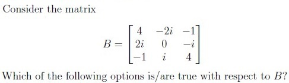
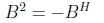
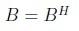
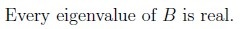
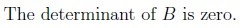
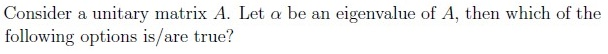
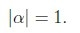
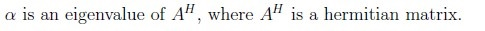
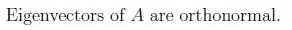
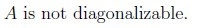
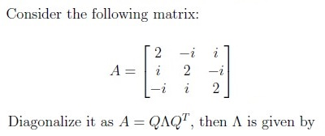
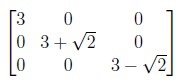
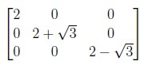
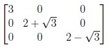
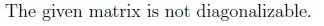
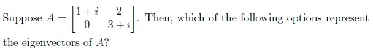
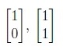
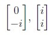
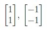
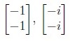
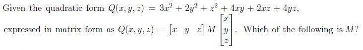
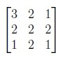
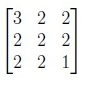
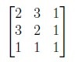
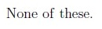
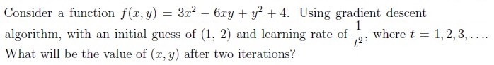
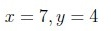
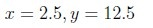
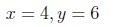
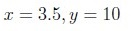
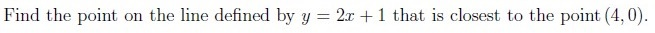
- (3,7)
- (0.4, 1.8)
- (0,0)
- (-1,0)
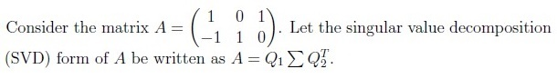
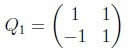
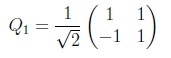
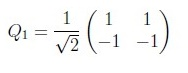
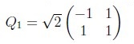
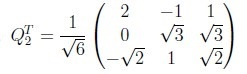
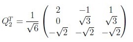
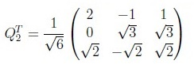
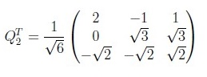
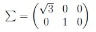
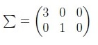
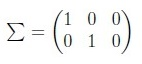
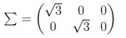
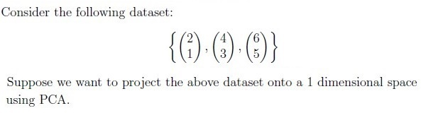
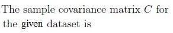
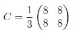
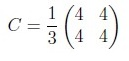
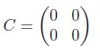
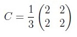

- M is an invertible matrix.
- M is a singular matrix.
- The determinant of M is 4.
- M is diagonalizable.

- A is positive definite.
- A is positive semi-definite.
- A is negative definite.
- A is negative semi-definite.
Answer key
- Q1 (MSQ, 3 marks): B, C
- Q2 (MSQ, 3 marks): A, B, C
- Q3 (MCQ, 3 marks): B
- Q4 (MCQ, 3 marks): A
- Q5 (MCQ, 3 marks): A
- Q6 (MCQ, 3 marks): B
- Q7 (MCQ, 3 marks): B
- Q8 (MCQ, 2 marks): B
- Q9 (MCQ, 2 marks): D
- Q10 (MCQ, 2 marks): A
- Q11 (MCQ, 3 marks): A
- Q12 (MCQ, 3 marks): D
- Q13 (MCQ, 3 marks): A
- Q14 (MSQ, 2 marks): B, D
- Q15 (MCQ, 2 marks): B
Concepts this paper tests
Auto-generated summary from the source site. Handy as a checklist; the lessons above explain each idea from scratch.
Summary of Core Topics, Concepts, Principles, and Equations
1. Matrix Properties and Operations
- Hermitian Matrix: A matrix equal to its conjugate transpose, .
- Unitary Matrix: A matrix whose conjugate transpose is its inverse, .
- Determinant: A scalar value that can be computed from the elements of a square matrix and encodes certain properties of the linear transformation described by the matrix.
- Trace: The sum of the elements on the main diagonal of a square matrix.
- Eigenvalues and Eigenvectors: For a matrix , the eigenvalues and eigenvectors satisfy .
- Diagonalization: The process of finding a diagonal matrix similar to a given square matrix.
- Singular Value Decomposition (SVD): A factorization of a real or complex matrix, , where and are unitary matrices and is a diagonal matrix.
2. Matrix Equations and Properties
- Hermitian Matrix Equation:
- Unitary Matrix Property: for eigenvalues of a unitary matrix.
- Diagonalization Equation:
- SVD Equations:
3. Quadratic Forms and Gradient Descent
- Quadratic Form:
- Gradient Descent Algorithm: An optimization algorithm used to minimize some function by iteratively moving in the direction of steepest descent as defined by the negative of the gradient.
4. Principal Component Analysis (PCA)
- Covariance Matrix: A matrix of covariances between elements of a dataset.
- Eigenvalues of Covariance Matrix: Used to determine the principal components in PCA.
- Projection onto Principal Components: The process of reducing the dimensionality of a dataset by projecting it onto the principal components.
5. Matrix Invertibility and Definiteness
- Invertible Matrix: A matrix that has an inverse.
- Singular Matrix: A matrix that does not have an inverse (determinant is zero).
- Positive Definite Matrix: A matrix for which the associated quadratic form is always positive.
- Positive Semi-Definite Matrix: A matrix for which the associated quadratic form is always non-negative.
Equations
Matrix Properties
- Hermitian Matrix:
- Unitary Matrix:
- Determinant:
- Trace:
- Eigenvalues and Eigenvectors:
- Diagonalization:
- Singular Value Decomposition (SVD):
Quadratic Forms and Gradient Descent
- Quadratic Form:
- Gradient Descent Update Rule:
Principal Component Analysis (PCA)
- Covariance Matrix:
- Eigenvalues of Covariance Matrix:
- Projection onto Principal Components:
Matrix Invertibility and Definiteness
- Invertible Matrix:
- Singular Matrix:
- Positive Definite Matrix:
- Positive Semi-Definite Matrix: